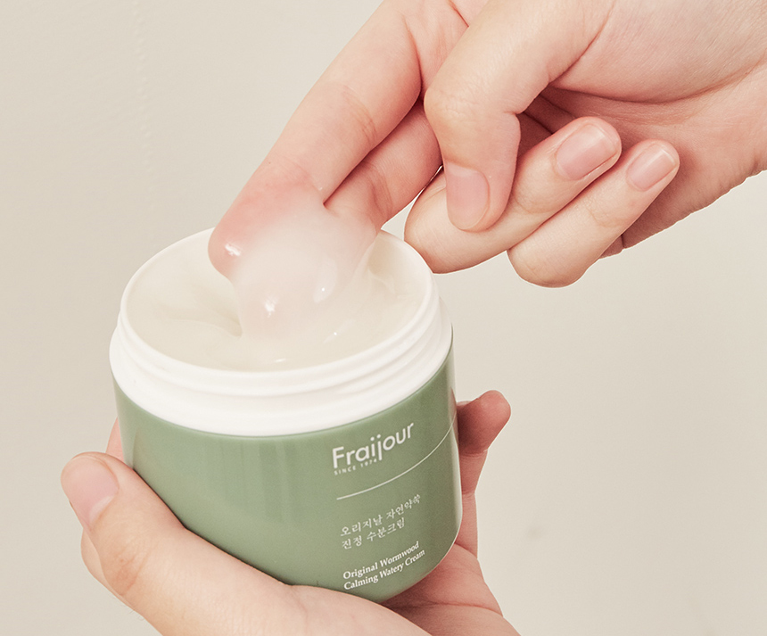
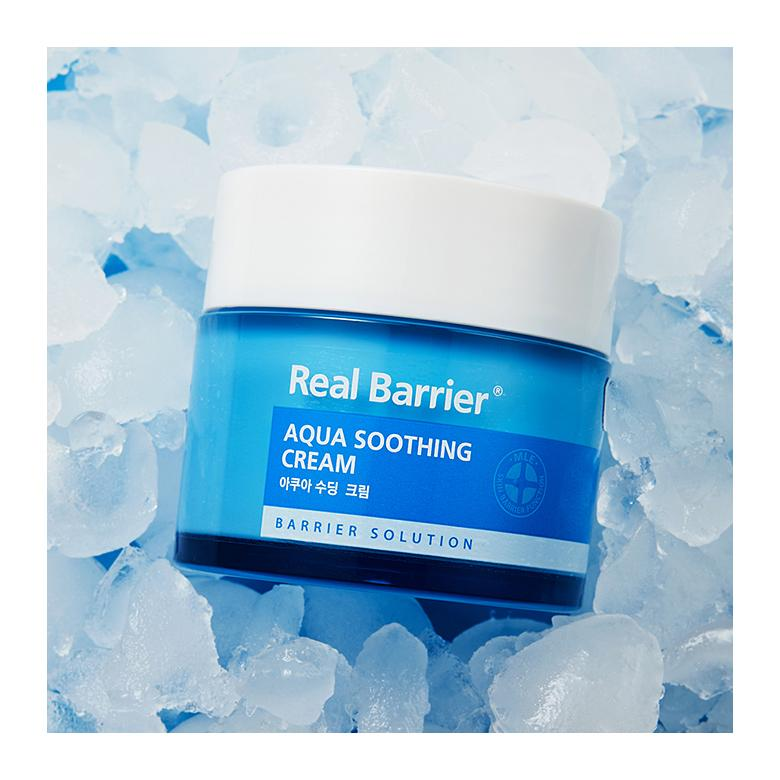
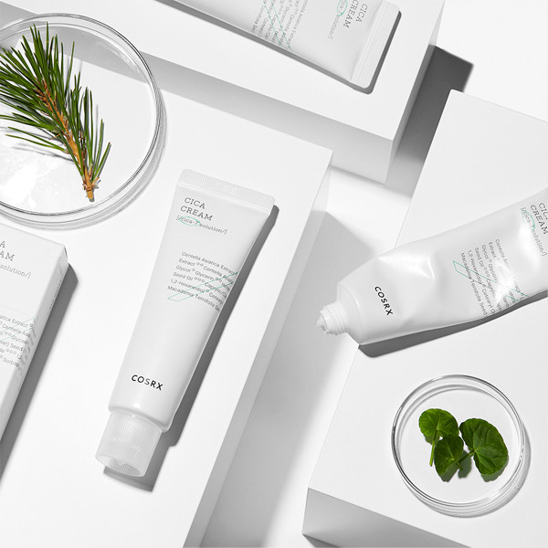
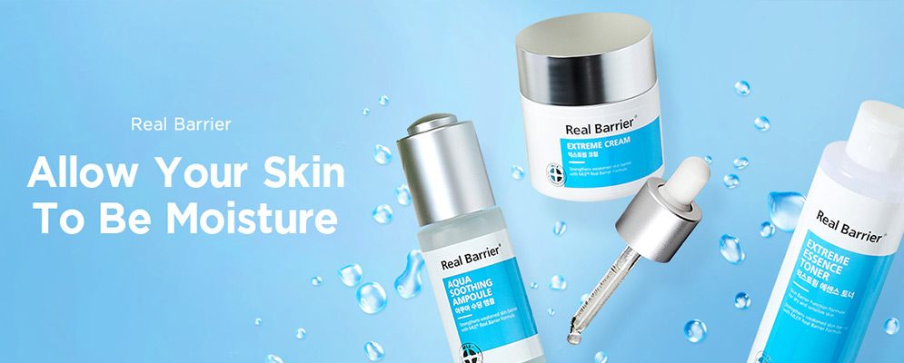
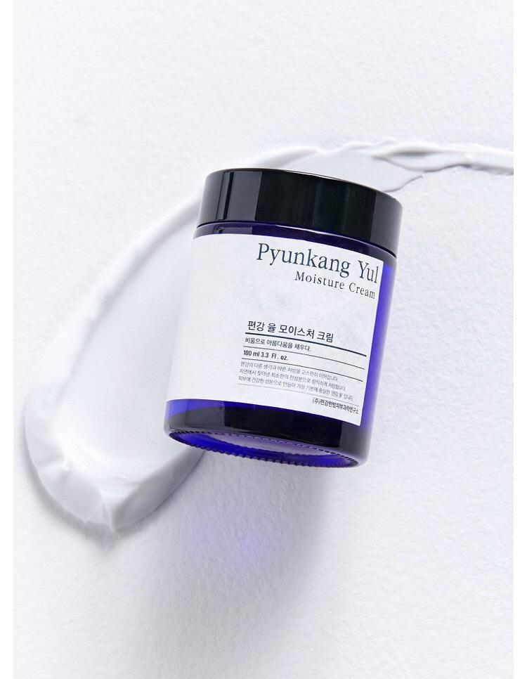
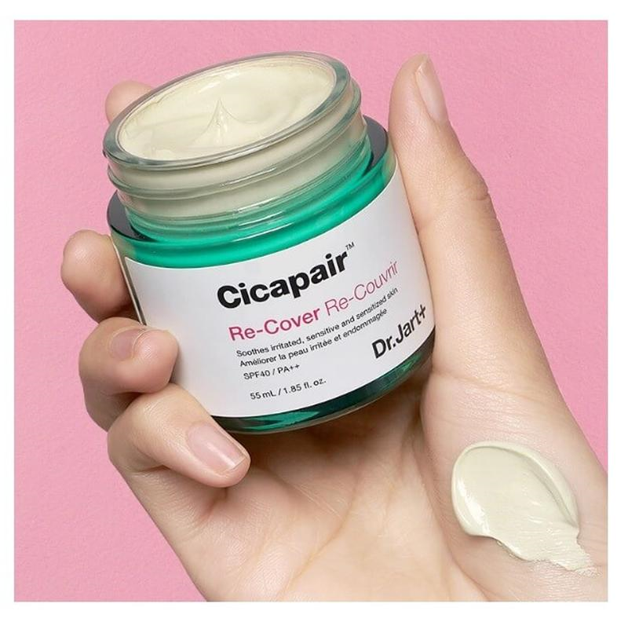

|
XOXO
Cosmetics
|
|---|
| Номер | Товар | Свойства продукта | Цена |
|---|---|---|---|
| 1 | 
|
Ассортимент продукции от мастеров бренда bFraijour изобилует
разнообразием первоклассной уходовой косметики. Она способна качественно и
эффективно позаботится о вашей внешности, подарив необходимую защиту и восстановление.
Если вы ищите надежный и эффективный крем для лица с проблемным типом эпидермиса, стоит обратить внимание на специальный крем «Растительные экстракты», который уже успел полюбится многим потребителям. Способ применения: Нанесите небольшое количество крема на предварительно очищенную кожу лица, слегка помассируйте, дайте впитаться. |
372грн. |
| 2 | 
|
Aqua Soothing Gel Cream обладает мягкой гелевой текстурой,
интенсивно увлажняет и охлаждает кожу, предупреждая перегревание.
В состав крема вошел комплекс гиалуроновой кислоты (Hyaluronic Acid,
Hydrolyzed Glucosaminoglycans), пантенол и эритритол.
Крем обладает охлаждающим эффектом, что поможет понизить температуру кожи на 5 градусов, так же крем не оставляет жирного блеска, увлажняет и успокаивает проблемную кожу.
Способ применения: Нанесите небольшое количество крема на чистую кожу. Дайте средству впитаться. |
880грн. |
| 3 | 
|
Чувствительная кожа нуждается в особенном уходе, особенно
если речь идет об увлажнении.
Специалисты бренда Cosrx разработали специальный крем с комплексом центеллы, который обеспечивает моментальное успокаивающее и тонизирующее воздействие. Особая формула восстанавливает защитный барьер кожного покрова и насыщает его витаминным комплексом растительного происхождения. Способ применения: После очищения и тонизирования, нанесите небольшое количество крема на лицо. Кончиками пальцев легкими массажными движениями распределите крем. |
505грн. |

| 4 |

|
Корейский бренд Pyunkang Yul создал уникальную «диету для кожи».
Проведя ряд исследований, косметологи и дерматологи отыскали наиболее
эффективную формулу.
Вся продукция дерматологически протестирована и не спровоцирует появление аллергической реакции. Способ применения: небольшое количество крема растереть в ладонях и распределить по чистому лицу прикладывающими движениями. |
634грн. |
| 5 | 
|
Повседневный уход за кожей лица призван не только поддерживать
здоровье, но еще и заботиться о том, чтобы оно сопровождалось
красотой и молодостью.
Корейские косметологи много лет пытались разработать универсальное средство, сочетающее уход и тонировку. И вот благодаря им у каждой девушки есть возможность пользоваться отличными СС-кремами. Один из таких, с восстановительным эффектом, вы найдете в ассортименте продукции мастеров бренда Dr.Jart+. Способ применения: Наносить на чистую кожу лица утром и вечером. |
920грн. |
|
Вы можете связаться с нами: e-mail:diana2000life$.gmail Instagram:XOXO COSMETICS
|
|---|